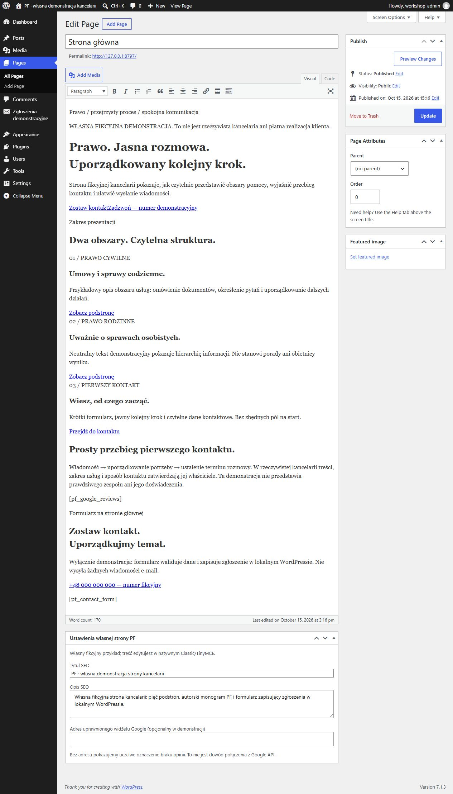
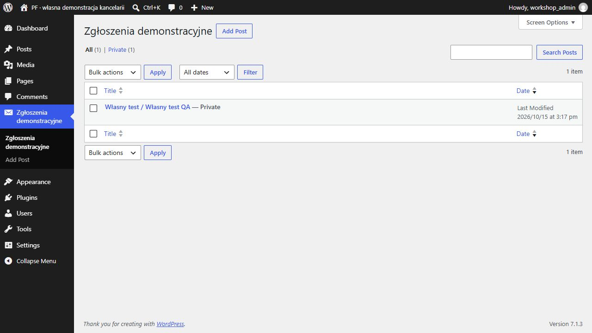

PF / strona usługowa
Odrębna fikcyjna witryna kancelarii: strona główna, o nas, dwa obszary usług i kontakt. Dodatkowa techniczna strona potwierdza poprawny zapis formularza.
To rzeczywiście wykonana autorska demonstracja z własną bazą, konfiguracją i natywnym panelem. Nie jest płatnym zleceniem klienta. Ta strona jest statycznym portfolio: zrzuty i eksporty nie udają działającego backendu.
Co rzeczywiście działa
- Natywne strony WordPress i własny motyw blokowy, edycja Classic/TinyMCE.
- Formularz: CSRF, walidacja kontaktu, zgoda i honeypot; prawdziwy zapis do prywatnego typu wpisu pf_demo_lead i odczyt w panelu.
- Monogram PF w SVG i PNG, wariant okrągły, Click-to-Call z jawnie fikcyjnym numerem.
- Metadane SEO i przygotowane miejsce konfiguracji widżetu Google. Fikcyjny profil nie ma prawdziwych opinii.
Pomiar Lighthouse 13.5.0
| Tryb | Wydajność | Dostępność | Dobre praktyki | SEO |
|---|---|---|---|---|
| mobile | 100 | 96 | 100 | 69 |
| desktop | 100 | 96 | 100 | 69 |
Rzeczywisty test lokalnego serwera, oficjalny Lighthouse i Chrome. To nie jest wynik produkcji klienta ani terenowy pomiar Google PSI. Demonstracje celowo mają noindex; ten warunek obniża ocenę SEO. Wynik nie gwarantuje 90+ na nieznanym hostingu.
Pełny raport mobile HTML · JSON mobile · Raport desktop · Dowód natywnego działania · Eksport rzeczywistego CMS
Rzeczywiste strony i panel



Granice demonstracji
- Test formularza nie wysyłał żadnej poczty i nie kontaktował żadnej osoby. Produkcyjny SMTP wymaga uzgodnionego dostępu klienta.
- Moduł Google jest niepodłączony. Nie deklarujemy odczytu Google API ani prawdziwych recenzji.